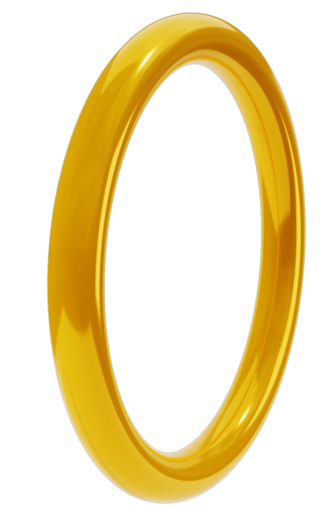

INFORMAÇÕES GERAIS
Tails é uma raposa antropomórfica amarela com duas caudas, que usa para voar girando-as como hélices. Ele tem 8 anos e fez sua primeira aparição em Sonic the Hedgehog 2 (1992) para o Mega Drive/Genesis.
Seu nome completo, Miles Prower, é um trocadilho com “miles per hour” (milhas por hora), refletindo sualigação com velocidade, enquanto “Tails”se refere às suas duas caudas únicas.
Além de companheiro de Sonic, Tails atua como inventor, mecânico e piloto da equipe, criando veículos, gadgets e tecnologias que ajudam a combater as ameaças de Dr. Eggman.